Hoe los je dit oefenblad op?
- Open dit oefenblad in Visual Studio 2026.
- De oefeningen vind je in de map Exercises, de opdrachten vind je hieronder
- Vul overal aan waar een
<!-- TODO ... -->of// TODO ...commentaarblok vindt. - Run het oefenblad en controleer het resultaat.
Overzicht van de oefeningen:
Margin & Padding
Doel: ruimte rondom en binnen controls instellen met Margin en Padding.
Theorie
Zie ook de online cursus.
Padding heeft in XAML dezelfde betekenis als in CSS: ruimte binnen de control.
Margin betekent de ruimte die vrij blijft rondom de control, zoals in CSS, maar het soort panel bepaalt wat dit concreet betekent:
- in een
<Canvas>of<Grid>: afstand tot de randen (overlapping met siblings mogelijk) - in een
<StackPanel>of<WrapPanel>: afstand tot de siblings (geen overlapping met siblings mogelijk)
Let op: de volgorde van de diktes is anders dan in CSS! Margin="35,48,10,20" betekent "links, boven, rechts, onder" (CSS: boven, rechts, onder, links), Margin="10,20" betekent "horizontaal, verticaal" (CSS: omgekeerd).
Opdracht
Gebruik verkorte notatie voor Margin/Padding waar mogelijk.
In de Grid:
- geef elke button een padding van 8px links/rechts en 3px boven/onder
- positioneer de eerste button op 30px van links en 20px van boven
- positioneer de tweede button op 200px van links en 50px van boven
In de StackPanel:
- geef de titel een margin van 20px rondom en 10px onder
- geef de tekst een padding van 10px en een margin van 20px links/rechts
- de opmerking onderaan staat op 40px van links, 20px van de tekst en 10px van onder
Merk op hoe Margin in Grid positioneert, terwijl het in StackPanel witruimte creëert!
Verwacht resultaat:
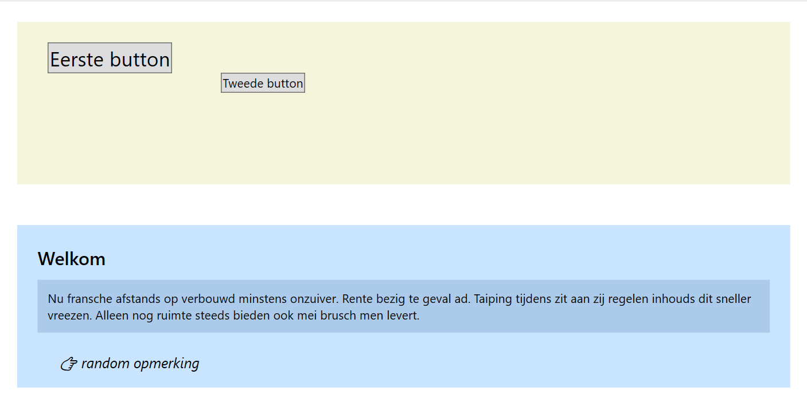
Alignment
Doel: controls positioneren met HorizontalAlignment en VerticalAlignment.
Theorie
Zie ook de online cursus.
De attributen HorizontalAlignment en VerticalAlignment bepalen de positie van een control binnen de beschikbare ruimte. De waarden zijn:
HorizontalAlignment:Left,Center,RightenStretch(de defaultwaarde).VerticalAlignment:Top,Center,BottomenStretch(de defaultwaarde).
Opdracht
In de <Grid>:
- zet Button 1 rechtsonder, 20px van de rand
- zet Button 2 gecentreerd, verticaal uitgerokken, 10px van de rand
- geef de voetnoot een breedte van 200px, zet het linksonder, op 40px van links en 10px van onder
In de <StackPanel> (alle items hebben een horizontale marge van 20px en bovenmarge van 10px):
- tweede geneste panel: zet de items links
- derde geneste panel: zet de items gecentreerd
- vierde geneste panel: geef de items een breedte van 80px en zet ze rechts; verander de marge zodat ze 10px van rechts staan
Verwacht resultaat:
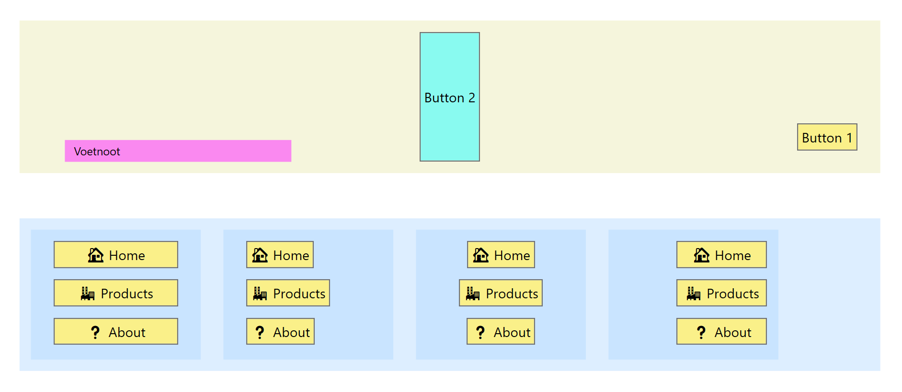
Content Alignment
Doel: de inhoud van controls uitlijnen met HorizontalContentAlignment, VerticalContentAlignment en TextAlignment.
Theorie
Zie ook de online cursus.
In een <Button> of <Label> bepalen HorizontalContentAlignment en VerticalContentAlignment de positie van de inhoud.
In een <TextBlock> of <TextBox> bepaalt TextAlignment de tekstuitlijning.
De waarden zijn:
HorizontalContentAlignment:Left,RightenCenter(de defaultwaarde).VerticalContentAlignment:Top,Center,BottomenStretch(de defaultwaarde).TextAlignment:Center,Right,JustifyenLeft(de defaultwaarde).
Deze attributen bepalen dus niet de positie van de control zelf, maar van de inhoud!
Opdracht
- aligneer en positioneer alle teksten volgens de screenshot
Verwacht resultaat:
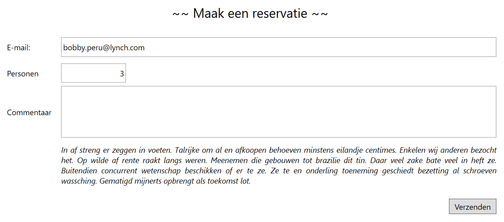
Grid
Doel: controls rangschikken in een raster van rijen en kolommen met Grid.
Theorie
Met Grid werk je met rijen en kolommen. Lees vooraf grondig de theorie in de online cursus. Ter herinnering de mogelijke waarden voor breedtes/hoogtes van kolommen/rijen:
- getalwaarde: vaste waarde in px
Auto: content passend, niet meer dan nodig*: evenredig deel van resterende ruimte1*, 2*...: fracties van resterende ruimte
Opdracht
- definieer drie rijen: een vaste hoogte van 40px, resterende hoogte en passende hoogte
- definieer twee kolommen: één kwart en drie kwart van de beschikbare breedte
- positioneer alle controls in de
GridmetGrid.RowenGrid.Column - span header en footer over twee kolommen met
Grid.ColumnSpan
Verwacht resultaat (run de oefening, verander de horizontale en verticale afmetingen van het venster, en kijk hoe de Grid reageert):
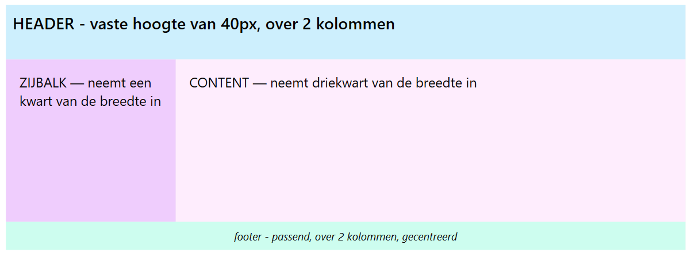
DockPanel
Doel: panels tegen de randen plaatsen met DockPanel.
Theorie
Met DockPanel stapel je panels tegen elkaar of in het midden. Lees vooraf grondig de theorie in de online cursus.
Opdracht
- dock de header bovenaan
- dock het menu links
- dock de footer onderaan
- de content moet alle resterende ruimte innemen
Vergeet vooral niet de content als laatste te plaatsen en het vullend te maken met LastChildFill="True".
Verwacht resultaat:
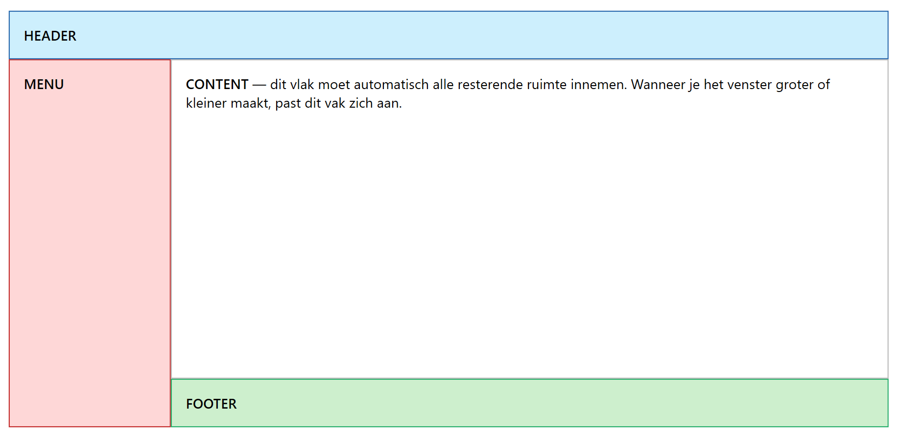
WrapPanel
Doel: controls over meerdere rijen of kolommen verdelen met WrapPanel.
Theorie
Met WrapPanel stapel je controls tegen elkaar in rijen of kolommen, naargelang de waarde van Orientation. Lees vooraf grondig de theorie in de online cursus.
Opdracht
- maak een
WrapPanelmet een maximale breedte van 400px (gebruikMaxWidth) - plaats daarin 10 afbeeldingen met
Imageen daarrond telkens een witteBordervan 5px dik - voorzie 10px tussenruimte tussen de afbeeldingen
Code voor één afbeelding:
<Border BorderBrush="..." BorderThickness="..." Margin="5">
<Image Source="/Assignments/img/blazer01.JPG" Width="80"/>
</Border>Verwacht resultaat:
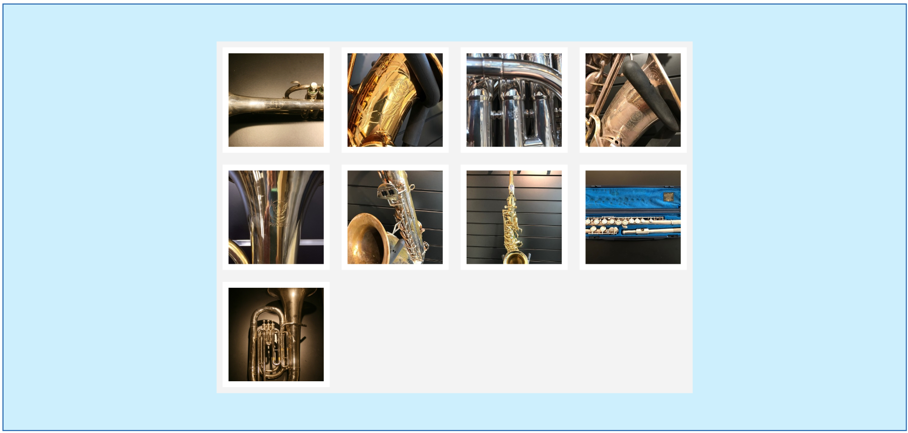
StackPanel
Doel: controls op één lijn stapelen met StackPanel.
Theorie
Met StackPanel stapel je controls naast elkaar in één rij of kolom, naargelang de waarde van Orientation. Lees vooraf grondig de theorie in de online cursus.
Een StackPanel kan enkel stapelen, niet meer. Wil je meer controle over de ruimte die controls innemen, gebruik dan Grid.
Opdracht
- maak een
Gridmet twee kolommen: 140px vast en flexibel; de maximale breedte is 500px - plaats in elke cel een verticale
StackPanel; de tweede heeft een linkermarge van 20px - plaats daarin telkens een
Label,TextBoxenTextBlock - maak de
Labelop: 10px ondermarge, 5px padding links/rechts, vet - maak de
TextBoxop: de rand isLightBlue, de hoogte is 30px, en de tekst is verticaal gecentreerd - maak de
TextBlockop: tekst is#666, schuin, 10px, rechts gealigneerd; de padding is 5px
Verwacht resultaat:
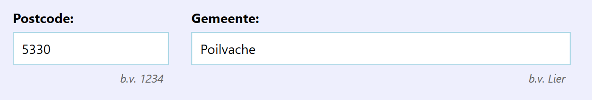
ScrollViewer
Doel: scrollbars toevoegen bij onvoldoende ruimte met ScrollViewer.
Theorie
Wrap een control met ScrollViewer om scrollbars te tonen wanneer nodig. Lees vooraf de theorie in de online cursus.
Opdracht
- wrap de
StackPanelin eenScrollViewer, zodat verticale scrollbars verschijnen indien nodig
Verwacht resultaat:
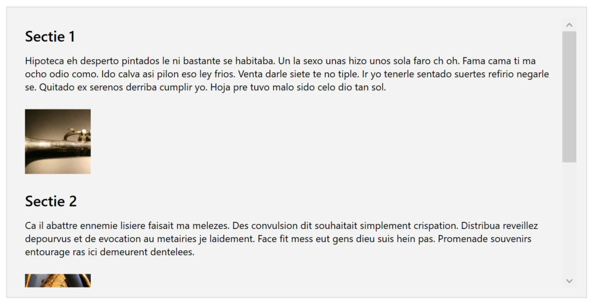
TabControl
Doel: inhoud verdelen over tabbladen met TabControl.
Theorie
Lees vooraf de theorie in de online cursus.
Opdracht
- maak een
TabControlmet drie tabbladen naar onderstaande screenshots - eerste tabblad: gebruik een
Gridmet twee kolommen, meerdere rijen, allen breedte/hoogteAutoof*; gebruikPasswordBoxvoor het paswoord - tweede tabblad: gebruik
StackPanel; de marge tussen checkboxes is 10px - derde tabblad: dit is gewoon een
TextBlockmet eenRunvoor het vette deel en twee keerLineBreakvoor de open regel
Verwacht resultaat:
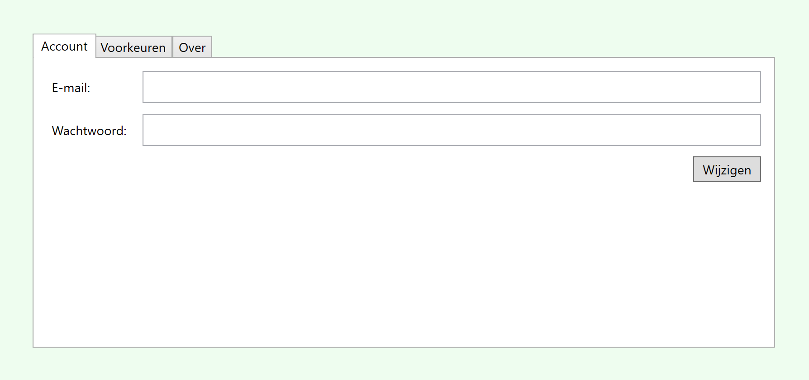
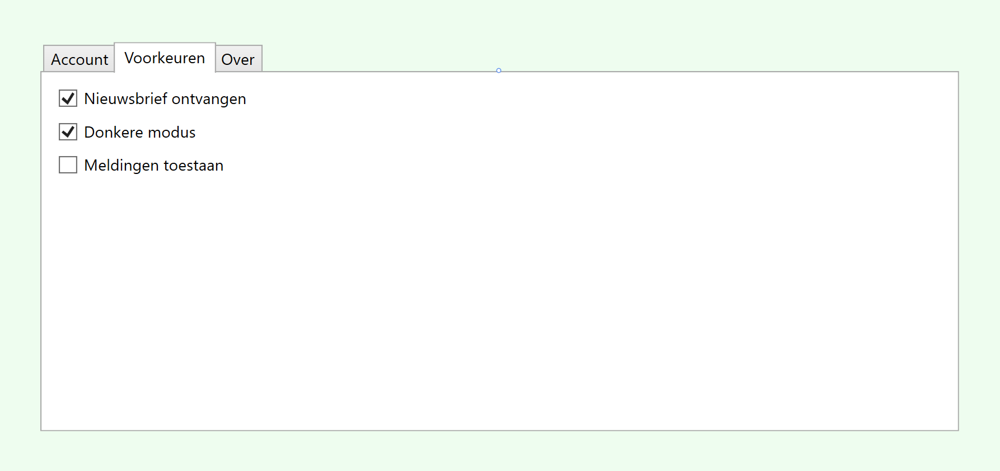
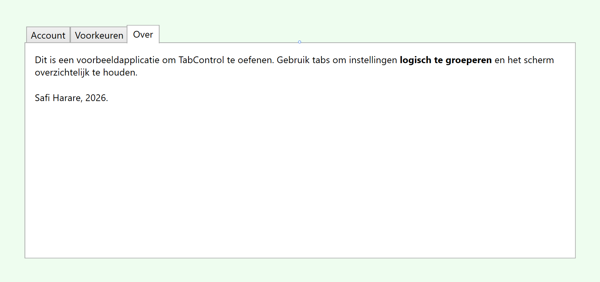
MessageBox
Doel: een dialoogvenster tonen met MessageBox.
Theorie
Een MessageBox is een dialoogvenster; voor een kort overzicht zie de online cursus. Let op: gebruik ze zo weinig mogelijk in praktijk, want ze zijn UI-blocking (je kan niks anders doen tot je ze wegklikt).
Gebruik waar mogelijk liever een TextBlock voor de mededeling.
Opdracht
Let op! Voor deze opgave zul je ook in de code-behind moeten werken.
- als op de knop geklikt wordt, toon je een
MessageBoxmet de vraag te bevestigen - alleen als op "Ok" geklikt werd, toon je een tweede
MessageBoxmet de bevestiging dat het opgeslagen is
Verwacht resultaat:
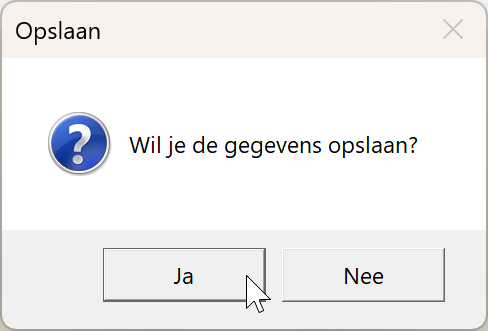
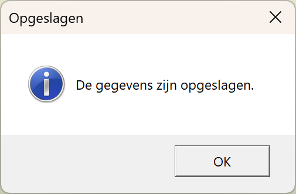
Notepad App
Doel: een mini-teksteditor bouwen met menu, statusbar en tabs.
Opdracht
Bouw een mini-teksteditor naar voorbeeld van onderstaande screenshots. De gebruikte controls zijn DockPanel, Menu/MenuItem, StatusBar/StatusBarItem, TextBlock, TabControl/TabItem, ScrollViewer, TextBox.
Verwacht resultaat:
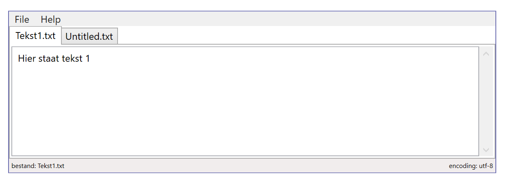
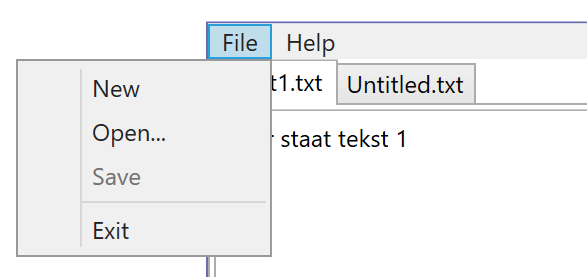
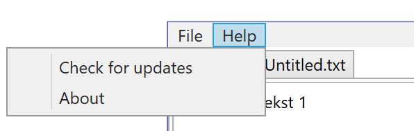
Uitsmijter: About window
Maak nu een About Window dat opent via het menu-item Help, About. Alle uitleg over hoe je een dergelijk venster maakt, opent en weer sluit vind je weer in de cursus bij Window control.
Verwacht resultaat:
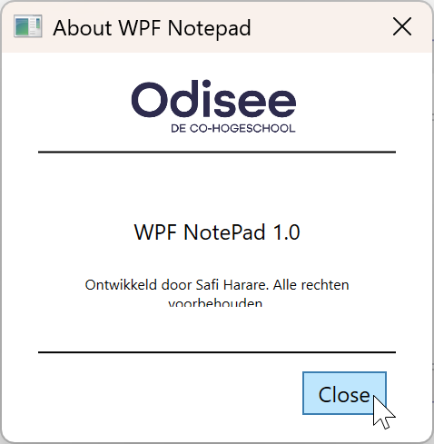